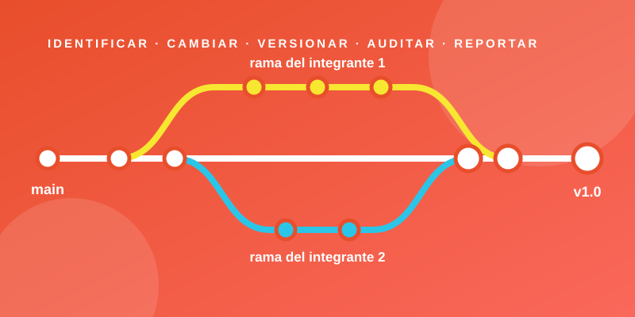

Ingeniería de Software · Capítulo 22
Administración de la Configuración del Software (ACS)
Cómo un equipo de desarrollo mantiene el orden cuando todo cambia: qué se identifica, cómo se controlan los cambios, cómo se guardan las versiones y cómo se comprueba y comunica lo que pasó.

Introducción
En cualquier proyecto de software el cambio es constante: el cliente pide algo nuevo, se descubre un error, el equipo mejora el diseño o cambia una tecnología. El problema no es que haya cambios, sino que ocurran sin control. Cuando nadie sabe qué versión es la correcta, quién modificó un archivo o por qué dejó de funcionar algo que antes funcionaba, el proyecto se vuelve caótico.
La Administración de la Configuración del Software (ACS), conocida en inglés como Software Configuration Management (SCM), es el conjunto de actividades que sirven para gestionar ese cambio durante toda la vida del software. No busca impedir que el software cambie, sino que cada cambio sea identificado, evaluado, registrado y comunicado.
Definición
La ACS es una actividad de protección que se aplica a lo largo de todo el proceso de software para identificar los elementos que pueden cambiar, controlar esos cambios, asegurar que se implementen correctamente e informar a todas las personas interesadas.
Conceptos clave antes de empezar
ICS
Ítem de Configuración del Software. Cualquier producto de trabajo que se controla: un documento de requisitos, un diagrama, un archivo de código o un caso de prueba.
Línea base
Línea de referencia. Un ICS que ya fue revisado y aprobado. A partir de ese momento solo puede cambiar mediante un procedimiento formal.
Repositorio
Base de datos del proyecto. El lugar donde se guardan todos los ICS, sus versiones y las relaciones entre ellos.
En este resumen se explica la sección 22.3: El proceso ACS, que describe las cinco tareas con las que se administra la configuración: identificación, control de versión, control de cambio, auditoría y reporte de estado.
El proceso ACS
Pressman explica que el proceso ACS es una serie de tareas organizadas que persiguen cuatro objetivos. Lo importante es que este proceso no tiene que ser burocrático ni pesado: debe ser lo suficientemente claro como para que el equipo sepa cómo actuar ante cualquier cambio.
- 1Identificar todos los ítems que, en conjunto, forman la configuración del software.
- 2Gestionar los cambios que se hagan a uno o varios de esos ítems.
- 3Facilitar la construcción de diferentes versiones de una aplicación.
- 4Garantizar la calidad del software mientras la configuración evoluciona con el tiempo.
Las preguntas que el proceso debe responder
Para cumplir esos objetivos, un equipo necesita respuestas claras a estas preguntas. Cada una se relaciona con una tarea de ACS:
| Pregunta | Tarea ACS que la responde |
|---|---|
| ¿Cómo se identifican los elementos individuales de la configuración? | Identificación |
| ¿Cómo se manejan las muchas versiones de un programa y su documentación? | Control de versión |
| ¿Cómo se controlan los cambios antes y después de entregar el software al cliente? | Control de cambio |
| ¿Quién aprueba y prioriza los cambios solicitados? | Control de cambio (ACC) |
| ¿Cómo se garantiza que los cambios se hicieron bien? | Auditoría de la configuración |
| ¿Cómo se informa a los demás sobre los cambios realizados? | Reporte de estado |
Cualquier cambio, incluso uno para mejorar, trae consigo incomodidades.
Las cinco capas del proceso ACS
Sección en desarrollo en la rama rama-johansell.
Identificación de objetos de la configuración
Sección en desarrollo en la rama rama-johansell.
Control de versión
Sección en desarrollo en la rama rama-johansell.
Control de cambio
Sección en desarrollo en la rama rama-companero.
Auditoría de la configuración
Sección en desarrollo en la rama rama-companero.
Reporte de estado de la configuración (REC)
Sección en desarrollo en la rama rama-companero.
La ACS en la práctica: Git y GitHub
Sección en desarrollo en la rama rama-companero.
Conclusión
Sección en desarrollo en la rama rama-companero.
Pon a prueba lo aprendido
Sección en desarrollo en la rama rama-companero.
Referencias bibliográficas
Sección en desarrollo en la rama rama-companero.
¿Te fue útil esta información?
¡Gracias por tu respuesta!